THE AQUATIMER WATCHES COLLECTION
- 1984
- -
- 1988
- 1993
- 1995
- 2003
- 2008
- 2011
- 2014
- 2017
- 2018
- 2019
-
1984
With its Portofino range of watches, IWC resumed its tradition of the classic, functional round gold cases. Reference 5251, with its outstanding horological features, marked this start. In 1984 it became the lead model of the Portofino family.
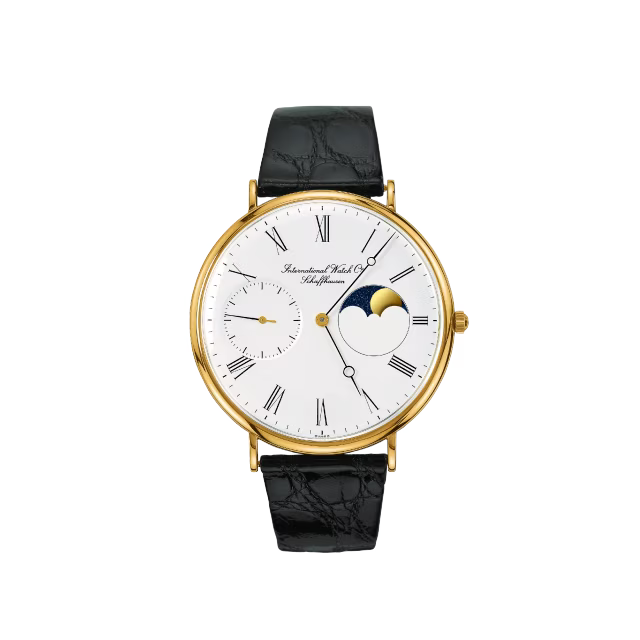 Portofino Hand Wound Moonphase -
DESIGN HIGHLIGHTS
-
1988
The Portofino also benefited from a number of the factory’s technical innovations. From 1988, the hybrid movement calibre 631 with a mechanical chronograph equipped the smallest Portofino Chronograph for ladies, reference 3730, as well as the somewhat larger Portofino chronograph, reference 3731, with a rotating date display.
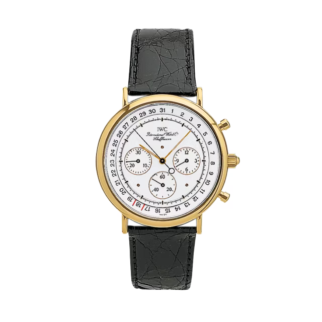 Portofino Chronograph Quartz -
1993
A Portofino that stood out from the rest was the smallest and most delicate Portofino, the reference 2010. A watch with two hands, driven by a flat hand-wound movement IWC Caliber H/849 was just 1.85 millimeters thick. The watch was sold from 1993 to 2005.
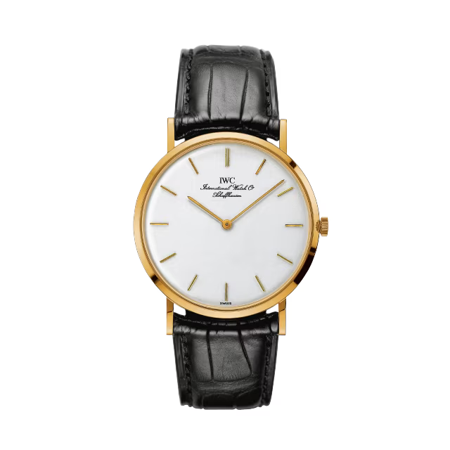 Portofino Hand Wound -
1995
In 1994 the Mark XII Pilot's Watch succeeded the Mark 11. As to be expected, it was state of the art, and featured an automatic movement and date display.
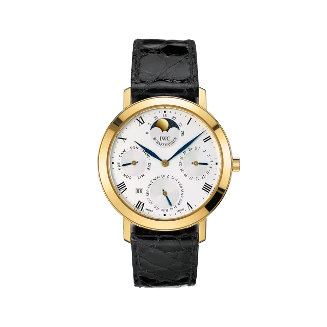 Romana Perpetual Calendar -
2003
IWC received feedback from its customers in the 1990s that the Portofino was lagging behind the new preferences in case dimensions. So in 2003, the size of the Portofino Automatic increased to 38 millimetres with the reference 3533. Keeping with the classical design, the contemporary size made it attractive to a new group of customers.
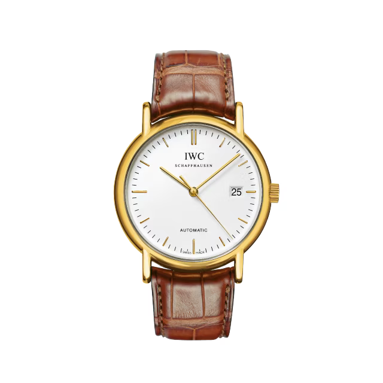 Portofino Automatic -
2008
With its narrow Roman numerals and the moon phase display, the Portofino Vintage fascinated with the same timeless elegance as the original in 1984. In contrast to the original, however, the Savonette movement caliber 98800 allowed the positioning of the lunar phase and seconds to be displayed at 12 o'clock and 6 o'clock.
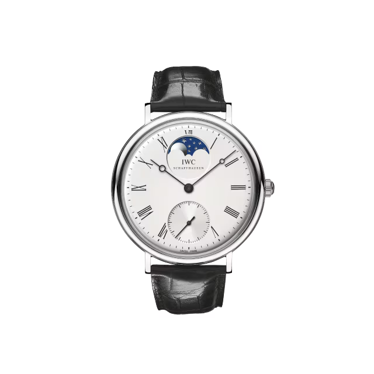 Portofino Vintage -
2011
Thanks mainly to its technological sophistication, the Portofino Hand-Wound Eight Days, reference 5101, established itself as the flagship of the Portofino family in the new 2011 collection. Inside, it featured the new IWC-manufactured movement 59210 calibre hand wound with an 8 days power reserve.
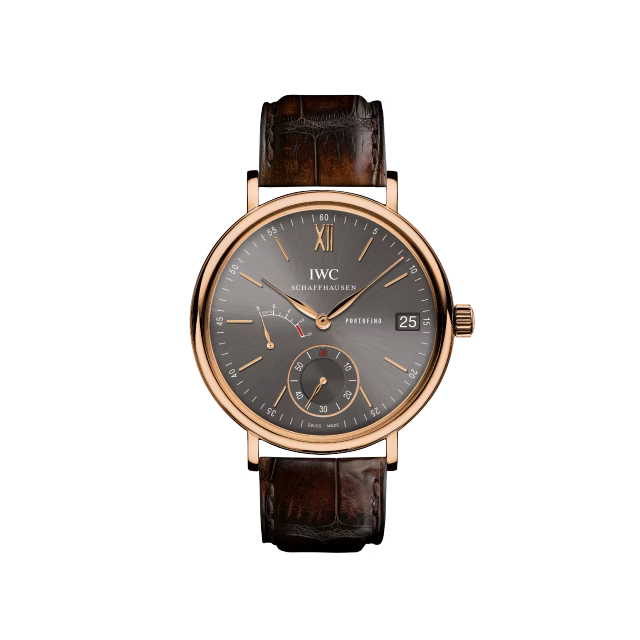 Portofino Hand Wound Eight Days -
2014
With the Portofino Automatic 37, IWC introduced a series of beautifully designed midsize watches in 2014. With a case measuring just 37 millimeters in diameter, these simple and elegant three-hand timepieces fit perfectly around slender wrists.
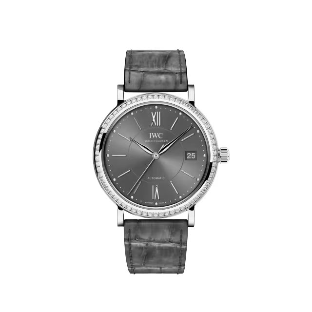 Portofino Automatic 37 -
2017
In 2017, IWC integrated a moon phase display in a Portofino with the IWC-manufactured 59800 calibre eight day, hand-wound movement for the first time. The timepiece paid tribute to the Reference 5251 from the year 1984, which also featured this popular complication.
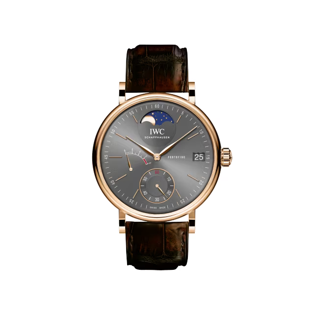 Portofino Hand Wound Moonphase -
2018
Limited to 2000 pieces, this timepiece is part of the jubilee collection celebrating the 150 year anniversary of IWC Schaffhausen. With a diameter of 40 mm it perfectly suits both ladies and gentlemen, and stuns with its blue dial, lacquer finish and rhodium-plated hands, housed in a stainless steel case.
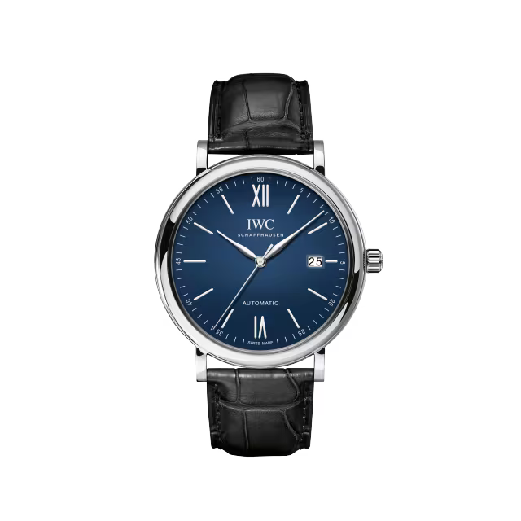 Portofino Automatic Edition “150 Years” -
2019
The Portofino Automatic 34 in 18-carat 5N gold with 104 diamonds and embossed silver-plated dial is the most prestigious model in the new ladies’ collection.
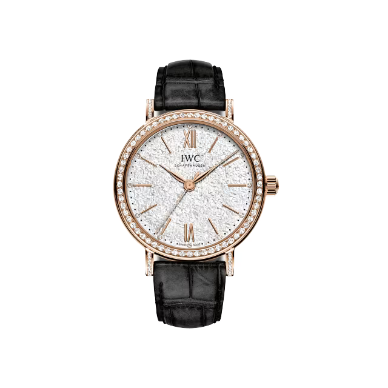 Portofino Automatic 34